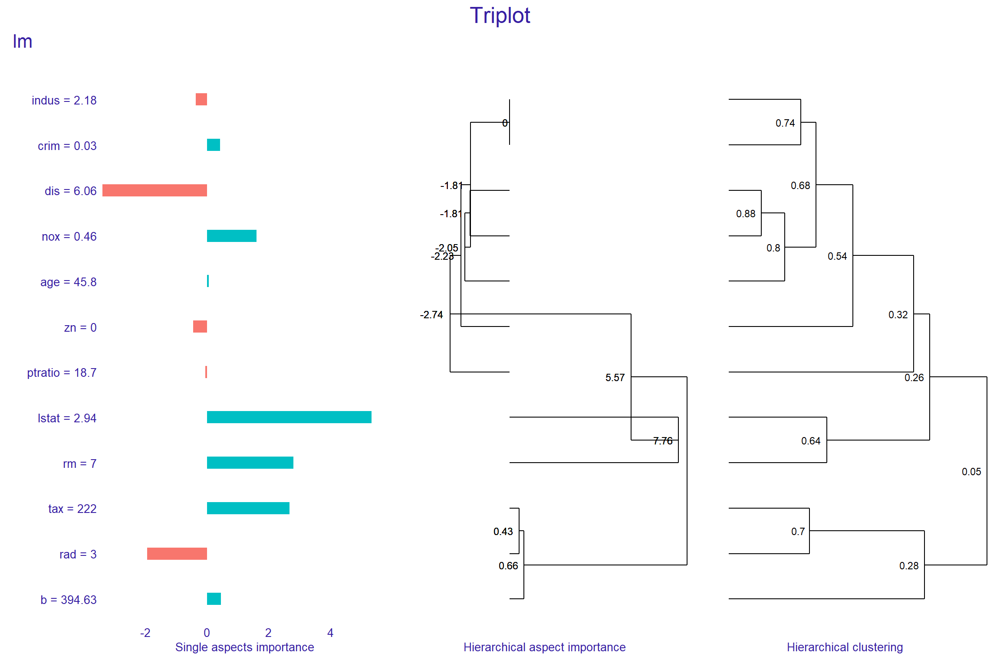
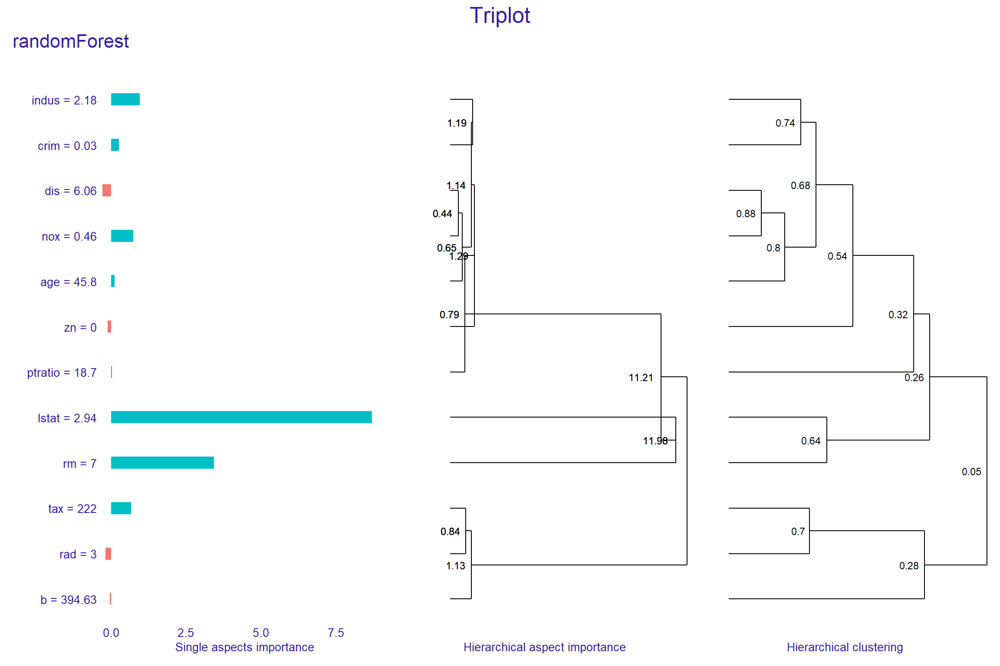

Description of aspect importance method
Katarzyna Pękala
2020-04-20
Source:vignettes/vignette_aspect_importance_description.Rmd
vignette_aspect_importance_description.RmdIntroduction
Aspect importance takes on the challenge of interpreting model built on highly dimensional data. There exist a number of methods for local explanation of black-box models, like Break Down, Shap or LIME. However, the problem arises when the explanatory variables are correlated.
Aspect importance’s aim is to increase the interpretability of the black box model by providing instance-level explainer for the groups of explanatory variables. It enables grouping predictors into entities called aspects. Afterwards, it can calculate the contribution of those aspects to the prediction.
Intuition
Let’s suppose that we built a model on highly dimensional data and we are using this model to predict an outcome for a new observation. We would like to gain insight which features are contributing more and which less, to this calculated prediction. However, when we calculate such importance of every single feature, the image may be still unclear, because there is so many of them. To gain better understanding, we can group those features. And afterwards, we can calculate the contribution (importance) to the prediction of every group of features (aspects). Hence the method aspect importance.
To achieve that goal, the method works in following way: it uses subset of observations from the original dataset and than it modifies it, so every observation will have at least one aspect (meaning at least one group of features) replaced by the data from the observation of interest. Then we will build linear model that will predict how those replacements change the prediction of the modified data.
Method
We start by having dataset \(\mathcal{X}\) and model \(f\) built on this dataset. We would like to explain the prediction for the observation of interest \(x_*\).
Before we can use the method, we need to group the explanatory variables into aspects. We can use two different approaches: we can built the aspect list arbitrarily by using domain expertise or we can use group_variables() function that will do the grouping for us by using variables correlations. In the second approach, we are going to get aspects where every absolute value of pair-wise correlation of explanatory variables is no smaller than a given level. It should be noted that group_variables() works only for numerical variables.
The aspect importance function algorithm starts with sampling observations from the dataset \(\mathcal{X}\) into matrix \(A\).
Afterwards, it creates binary matrix \(X'\). The number of rows of this matrix is equal to number of sampled observations in \(A\). The number of columns is equal to the number of aspects.
In the next step, matrix \(A\) is modified into matrix \(A'\). The binary matrix \(X'\) directs how the modification will work: for given observation from \(A\), function checks in binary matrix \(X'\) which aspects should be replaced by aspects from the observation of interest \(x_*\).
In result, we obtain a modified matrix \(A'\) where for every observation at least one aspect is replaced with the data from the observation of interest.
Next, the method checks how the aspects replacement changed the prediction. In other words, it looks at the difference between predictions for modified matrix \(A'\) and matrix \(A\).
Finally, we use linear model on the binary matrix \(X'\) where the difference in predictions is the dependent variable. Model’s coefficients are the results we are looking for - the values of aspects importance.
We can interpret coefficient \(\beta_i\) as the average change in prediction caused by replacing in \(A\) the variables (grouped in aspect \(i\)) by the variables from \(x_*\).
Aspect importance algorithm:
-
\(f\) - model
-
\(\mathcal{X}\) - dataset
-
\(x_*\) - observation to be explained
-
\(\mathcal{P}\) - aspects list, \(\mathcal{P} = {q_1, ..., q_m}\), partition of set of indexes \(J = {1, ..., p}\)
- \(b\) - size of sample
\(A\) = \([a_i^j]_{b \times p}\) = select_sample(\(\mathcal{X}\), \(b\))
sample (with replacement) B rows from \(\mathcal{X}\)\(X'\) = \([{x'}_i^k]_{b \times m}\) = sample_aspects(\(m\), \(b\))
sample binary matrix of size \(b \times m\)\(A'\) = \([{a'} _i^j]_{b\times p}\) = replace_aspects(\(A\), \(X'\))
\([{a'}_i^j] = [a_i^j]\), if \([{x'}_i^k] = 0\) where \(j \in q_k\)
\([{a'}_i^j] = x_{*j}\), if \([{x'}_i^k] = 1\) where \(j \in q_k\)\(Y_m = f(A') - f(A)\)
fit linear model \(g\), \(g(X') = Y_m\)
return coefficients of \(g\)
Example
To illustrate how the method works, we will use Boston Housing dataset from mlbench package. This well known dataset contains housing data for 506 census tracts of Boston. We will be predicting cmedv - corrected median value of owner-occupied homes (in USD 1000’s).
We are going to build two models: linear regression model and random forest. Those models will be built only on numerical variables. Then we will check the predictions for the observation called new_observation.
library(triplot) library(mlbench) library(randomForest) set.seed(123) data("BostonHousing2") Boston <- BostonHousing2[,-c(1:5, 10)] Boston_no_target <- BostonHousing2[,-c(1:6, 10)] new_observation <- Boston_no_target[4,] Boston_lm <- lm(cmedv ~., data = Boston) Boston_rf <- randomForest(cmedv ~ ., data = Boston) predict(Boston_lm, new_observation)
#> 4
#> 28.78676predict(Boston_rf, new_observation)
#> 4
#> 34.4931As we observe that those two models’ predictions for the new_observation are different, we would like to understand which groups of the observation’s features contribute to this differences. For that, we will use aspects_importance().
In the beginning, we have to build an aspect list. Then we will call aspects_importance() for both of those models to check:
- which aspects have the biggest contribution to the prediction in each case,
- what is minimal value of pairwise absolute correlation in each group,
- whether any aspect contains negatively correlated pair of features (
neg).
Finally, we will plot aspects_importance() results for both models.
We can notice that in random forest model, almost every group of features (except single feature b) have positive influence on the prediction. Wealth (rm and lstat) has the most important contribution, it’s significantly bigger than the rest. On the other hand, in linear model we can observe that some features have negative impact (geo, structure, ptartio). Nonetheless, positive contribution of wealth is still the most important, as in random forest model. After seeing this results, we can now understand why the prediction in linear model case is smaller than in random forest one.
Boston_aspects_m <- list(geo = c("dis", "nox", "rad"), wealth = c("rm", "lstat"), structure = c("indus", "age", "zn"), ptratio = "ptratio", b = "b", tax = "tax", crim = "crim") Boston_ai_lm <- aspect_importance(Boston_lm, Boston_no_target, predict_function = predict, new_observation, Boston_aspects_m, N = 5000, show_cor = TRUE, label = "LM") Boston_ai_rf <- aspect_importance(Boston_rf, Boston_no_target, predict_function = predict, new_observation, Boston_aspects_m, N = 5000, show_cor = TRUE, label = "RF") Boston_ai_lm
#> aspects importance features min_cor sign
#> 3 wealth 7.9568 rm, lstat 0.6408316 neg
#> 2 geo -3.9621 dis, nox, rad 0.4958065 neg
#> 7 tax 2.5038 tax NA
#> 4 structure -1.0941 indus, age, zn 0.5444226 neg
#> 5 ptratio -0.3219 ptratio NA
#> 6 b 0.2729 b NA
#> 8 crim 0.2235 crim NABoston_ai_rf#> aspects importance features min_cor sign
#> 3 wealth 11.60018 rm, lstat 0.6408316 neg
#> 4 structure 1.02818 indus, age, zn 0.5444226 neg
#> 7 tax 0.90006 tax NA
#> 2 geo 0.35672 dis, nox, rad 0.4958065 neg
#> 5 ptratio 0.17091 ptratio NA
#> 8 crim 0.08803 crim NA
#> 6 b -0.06641 b NAplot(Boston_ai_lm, Boston_ai_rf, add_importance = TRUE)

In some cases, manually grouping features into aspects may present some challenges. For that reason, we added function that can do that for us. Function group_variables() groups correlated features into aspects, given a correlation cut-off level.
Below we will use group_variables() function with a cut off level set on 0.6. As a result, we get a list of variables groups where absolute value of features’ pairwise correlation is at least at 0.6. Afterwards, we call aspects_importance() function again.
Since group_variables() built different list that us, we can observe a little bit different results. However, the final image still allow us to see that what we established as geographical and structure features, in general, have negative contribution on the prediction in linear case, while positive in the random forest one.
Boston_aspects_a <- group_variables(Boston_no_target, 0.6) Boston_ai_lm_2 <- aspect_importance(Boston_lm, Boston_no_target, predict_function = predict, new_observation, Boston_aspects_a, N = 10000, show_cor = TRUE, label = "LM") Boston_ai_rf_2 <- aspect_importance(Boston_rf, Boston_no_target, predict_function = predict, new_observation, Boston_aspects_a, N = 10000, show_cor = TRUE, label = "RF") Boston_ai_lm_2
#> aspects importance features min_cor sign
#> 4 aspect.group3 7.9860 rm, lstat 0.6408316 neg
#> 2 aspect.group1 -1.7999 crim, indus, nox, age, dis 0.6794867 neg
#> 3 aspect.group2 -0.6908 zn NA
#> 5 aspect.group4 0.6281 rad, tax 0.7048757 pos
#> 7 aspect.group6 0.4711 b NA
#> 6 aspect.group5 -0.1835 ptratio NABoston_ai_rf_2#> aspects importance features min_cor sign
#> 4 aspect.group3 11.60548 rm, lstat 0.6408316 neg
#> 2 aspect.group1 1.11142 crim, indus, nox, age, dis 0.6794867 neg
#> 5 aspect.group4 1.02974 rad, tax 0.7048757 pos
#> 6 aspect.group5 0.24018 ptratio NA
#> 7 aspect.group6 0.22562 b NA
#> 3 aspect.group2 -0.06245 zn NAplot(Boston_ai_lm_2, Boston_ai_rf_2, aspects_on_axis = FALSE, add_importance = TRUE)

Hierarchical aspects importance
Triplot is a tool built on aspects_importance function, that allows us to go one step further in our understanding of the inner workings of a black box model.
It illustrates, in one place:
- the importance of every single feature,
- hierarchical aspects importance (explained below),
- order of grouping features into aspects in
group_variables().
Hierarchical aspects importance allows us to check the values of aspects importance for the different levels of variables grouping. Method starts with looking at the aspect importance where every aspect has one, single variable. Afterwards, it iteratively creates bigger aspects by merging the ones with the highest level of absolute correlation into one aspect and calculating it’s contribution to the prediction.
It should be noted that similarly to group_variables(), triplot() works for the datasets with only numerical variables.
triplot(Boston_lm, Boston_no_target, predict_function = predict, new_observation, N = 10000, add_importance_labels = TRUE, axis_lab_size = 8, text_size = 3)

triplot(Boston_rf, Boston_no_target, predict_function = predict, new_observation, N = 10000, add_importance_labels = TRUE, axis_lab_size = 8, text_size = 3)

Lasso
Behind the scenes, aspect importance numbers are really linear model coefficients. That allowed us to add one more tool to control the method result. By using lasso regression, we can control how many nonzero coefficients (nonzero aspects importance values) are present in the final explanation. To use aspect_importance() with lasso, we have to provide n_var parameter, which declares how many aspects importance values we would like to get in aspect_importance() results.
Suppose that in our last example (random forest model with aspect list build by group_variables), we would like to calculate the importance of variables’ aspects, while controlling that three of them should be equal to 0. We will call aspect_importance() on this model, with n_var parameter set to 3.
In result, we get what we expected - three nonzero aspect importance values. We can observe that there exists significant difference between the level of contribution of aspect containing rm and lstat features and the other two groups.
aspect_importance(Boston_rf, Boston_no_target, predict_function = predict, new_observation, Boston_aspects_a, N = 10000, show_cor = TRUE, n_var = 3)
#> aspects importance features min_cor sign
#> 4 aspect.group3 10.55857 rm, lstat 0.6408316 neg
#> 3 aspect.group2 -0.12409 zn NA
#> 2 aspect.group1 0.08732 crim, indus, nox, age, dis 0.6794867 neg
#> 5 aspect.group4 0.00000 rad, tax 0.7048757 pos
#> 6 aspect.group5 0.00000 ptratio NA
#> 7 aspect.group6 0.00000 b NASummary
Aspect importance allow us to check how the level of prediction is influenced by the different groups of features. We added additional tools to this method that let us group features automatically, control how many nonzero values are in the method results or see how aspect importance values are changing while aspects are one by one increasing in size (hierarchical aspects importance).
However, we still see place for experimenting with stability of the results (size of the subset used by the aspect_importance), clarity of triplot and with lasso regression as the method extensions.
Session info
#> R version 3.6.3 (2020-02-29)
#> Platform: x86_64-w64-mingw32/x64 (64-bit)
#> Running under: Windows 10 x64 (build 18362)
#>
#> Matrix products: default
#>
#> locale:
#> [1] LC_COLLATE=Polish_Poland.1250 LC_CTYPE=Polish_Poland.1250
#> [3] LC_MONETARY=Polish_Poland.1250 LC_NUMERIC=C
#> [5] LC_TIME=Polish_Poland.1250
#>
#> attached base packages:
#> [1] stats graphics grDevices utils datasets methods base
#>
#> other attached packages:
#> [1] randomForest_4.6-14 mlbench_2.1-1 triplot_0.1.0
#>
#> loaded via a namespace (and not attached):
#> [1] Rcpp_1.0.4.6 compiler_3.6.3 pillar_1.4.3 ingredients_1.1
#> [5] iterators_1.0.12 tools_3.6.3 digest_0.6.25 lattice_0.20-38
#> [9] evaluate_0.14 memoise_1.1.0 lifecycle_0.2.0 tibble_3.0.0
#> [13] gtable_0.3.0 pkgconfig_2.0.3 rlang_0.4.5 foreach_1.5.0
#> [17] Matrix_1.2-18 cli_2.0.2 rstudioapi_0.11 yaml_2.2.1
#> [21] pkgdown_1.5.1 xfun_0.13 ggdendro_0.1-20 gridExtra_2.3
#> [25] stringr_1.4.0 dplyr_0.8.5 knitr_1.28 desc_1.2.0
#> [29] fs_1.4.1 vctrs_0.2.4 glmnet_3.0-2 tidyselect_1.0.0
#> [33] rprojroot_1.3-2 grid_3.6.3 glue_1.4.0 R6_2.4.1
#> [37] DALEX_1.0.1 fansi_0.4.1 rmarkdown_2.1 farver_2.0.3
#> [41] purrr_0.3.3 ggplot2_3.3.0 magrittr_1.5 codetools_0.2-16
#> [45] backports_1.1.6 scales_1.1.0 htmltools_0.4.0 ellipsis_0.3.0
#> [49] MASS_7.3-51.5 assertthat_0.2.1 shape_1.4.4 colorspace_1.4-1
#> [53] labeling_0.3 stringi_1.4.6 munsell_0.5.0 crayon_1.3.4